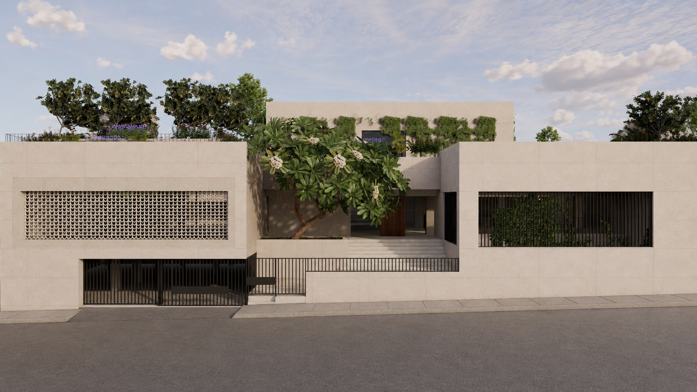
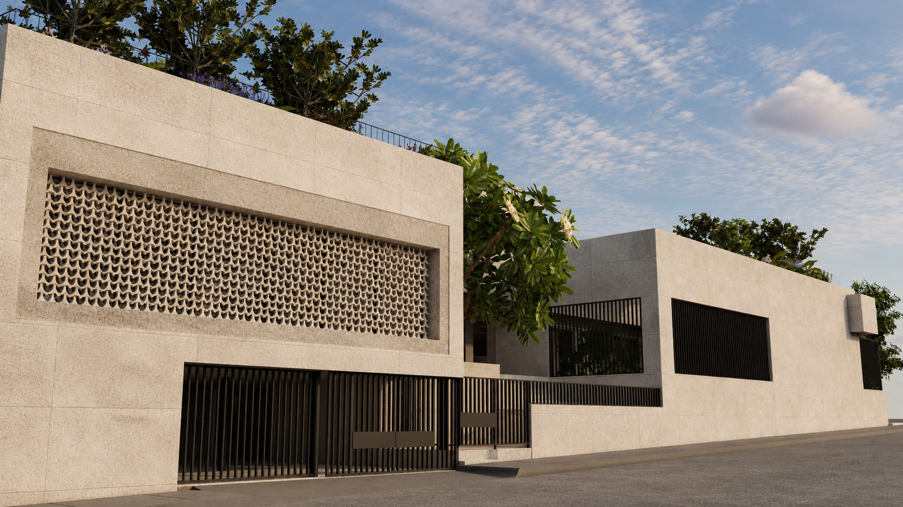
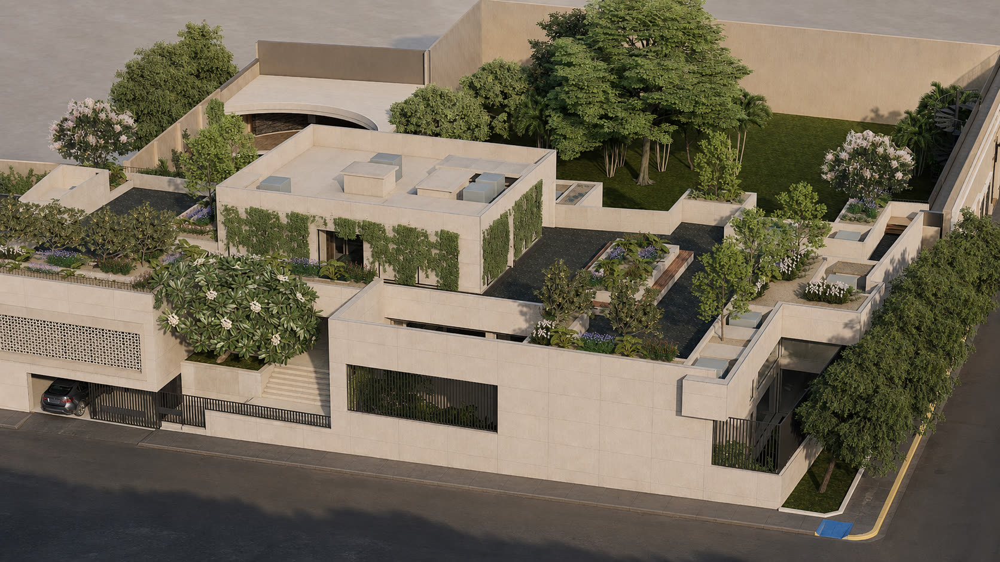
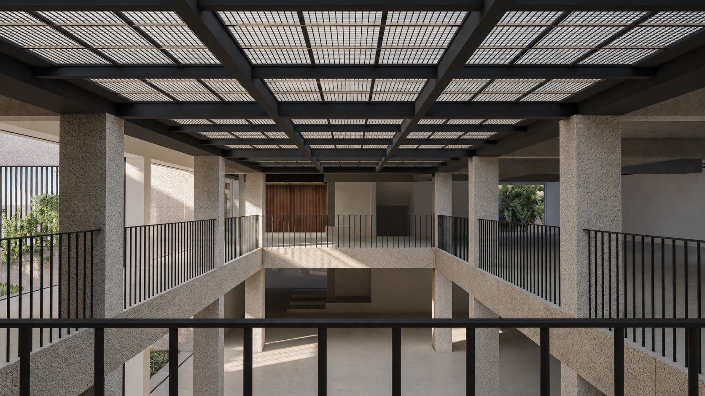
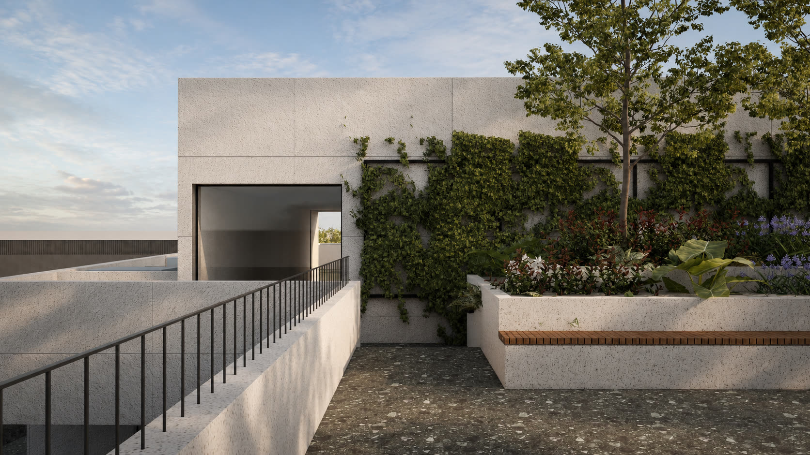
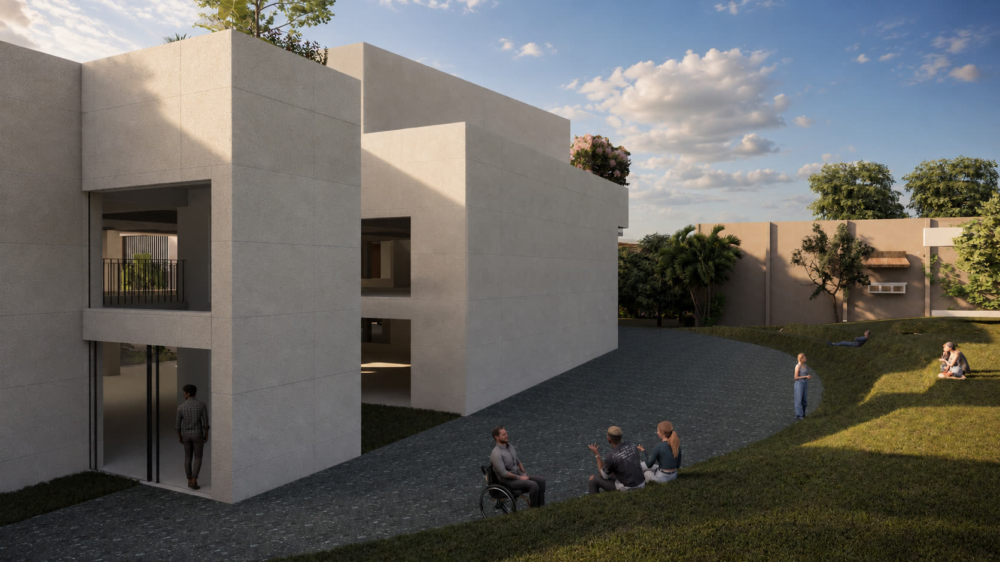

Adaptive reuse of an existing house in Primer Cuadro, Culiacán. The building will operate as a public museum: two galleries and three gardens organized by a 5.17 m double-height atrium.

Un atrio de doble altura entre dos galerías y tres jardines.
The garden is the third gallery of the museum. Landscape is organized in five programs: convivencia, vegetación, exposiciones, recreación, contemplación.
The project reuses an existing house at Vicente Riva Palacio 720, Primer Cuadro, Culiacán, Sinaloa, Mexico. A 5.17 m atrium organizes two galleries and three gardens: jardín central, jardín Buelna, and jardín etnobotánico.
Program: galleries, library, a salon, gardens, and a rooftop service core with public restrooms. Status: executive project in integration, August 2026.




